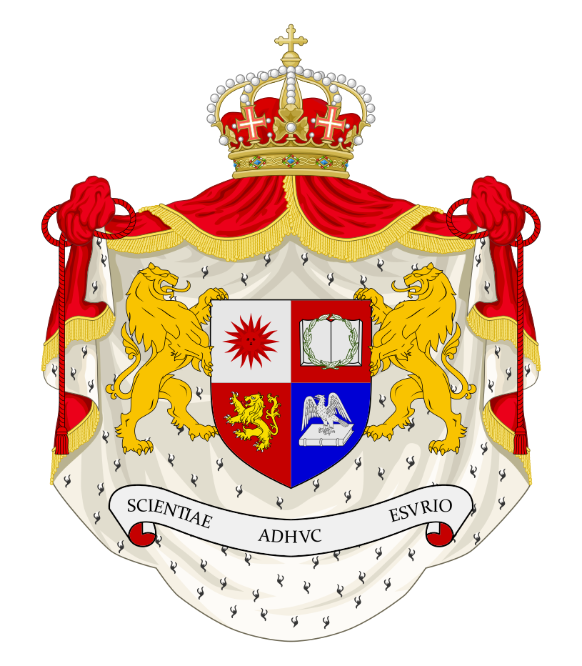

E
ducatio
S
apientia
A
uctoritas
REX ERUDITIONIS
SECUNDVS REX ERVDITIONIS ELISABETH
2025.10.06 ~
엘리사벳(Elisabeth) 학왕 폐하께서는 2025년 10월 6일 학왕으로 선출되셨습니다.
학왕 폐하께서는 이정연 스테파노 백작과 같은 점수를 얻으셨으나 이정연 스테파노 백작께서 나이가 어린 사람을 선출하라는 의견을 내셨고 이에 따라 동욱 학왕 폐하께서 학왕으로 선출되셨습니다.
김하경 미카엘라 학자 각하께서는 내무부 장관에, 정옥명 안나 학자 각하께서는 내무부 차관에 선출되셨습니다.

엘리사벳 학왕 폐하

내무부 장관 김하경 미카엘라 학자 각하

내무부 차관 정옥명 안나 학자 각하